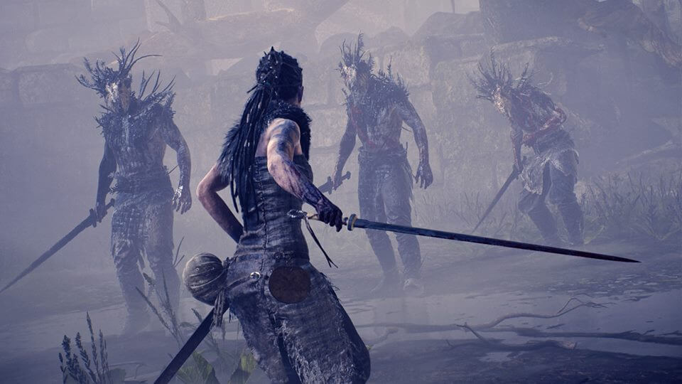
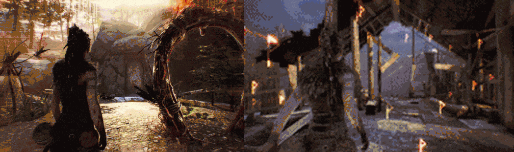
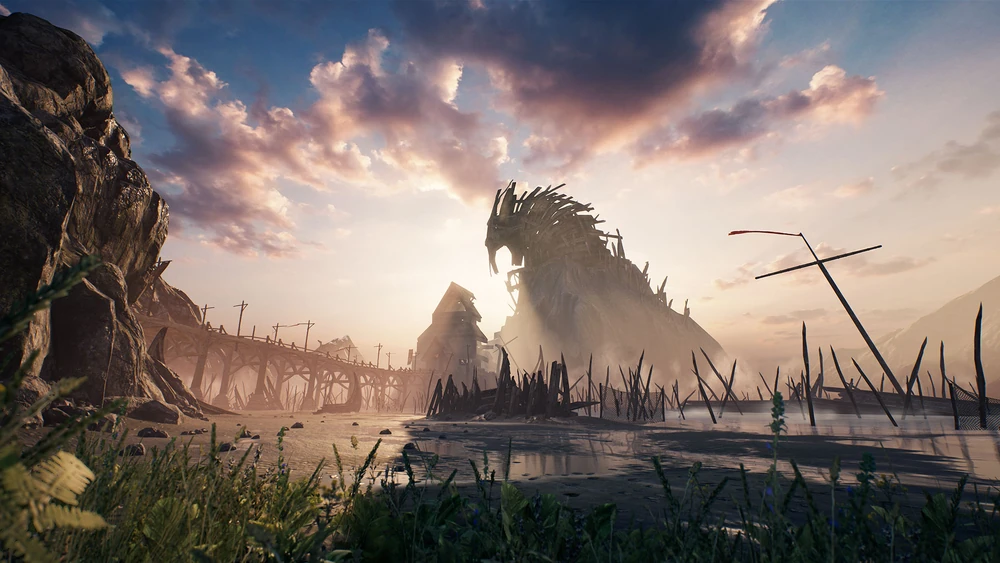
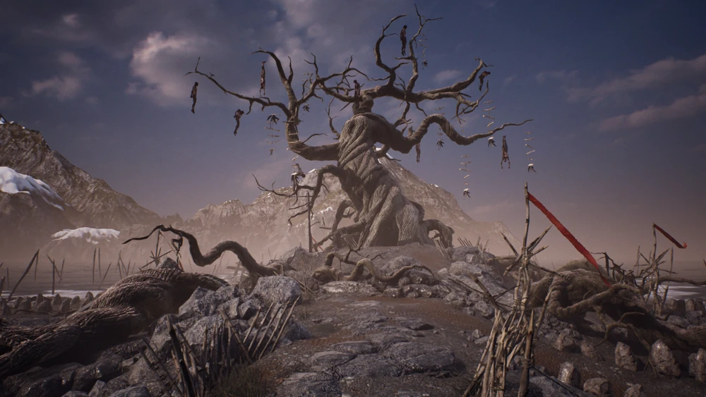
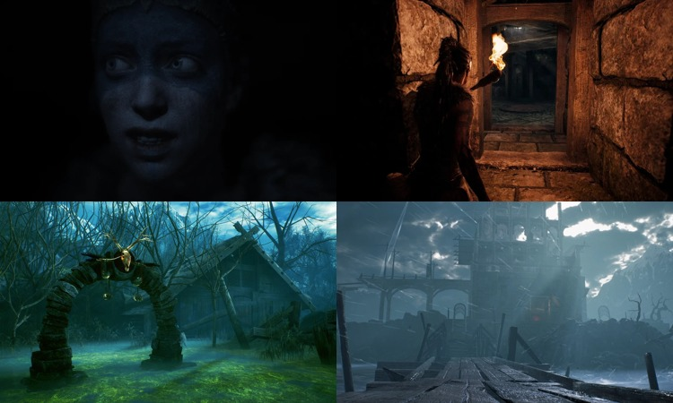
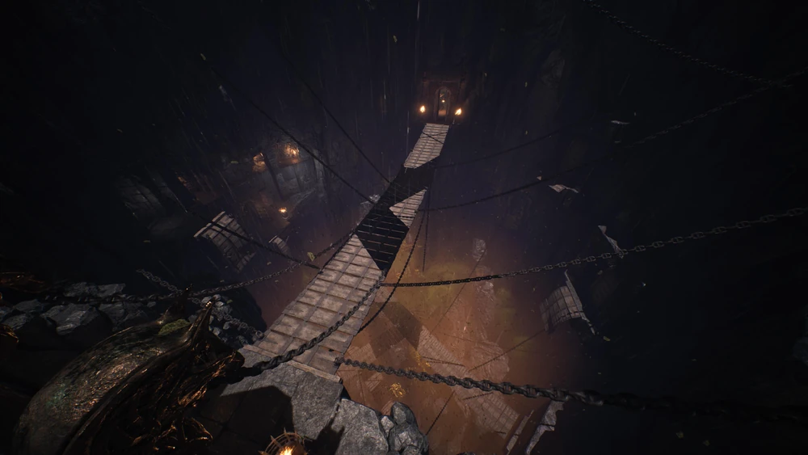
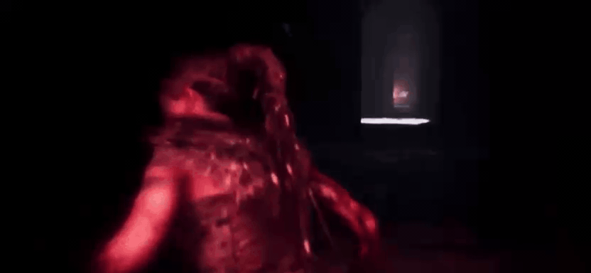
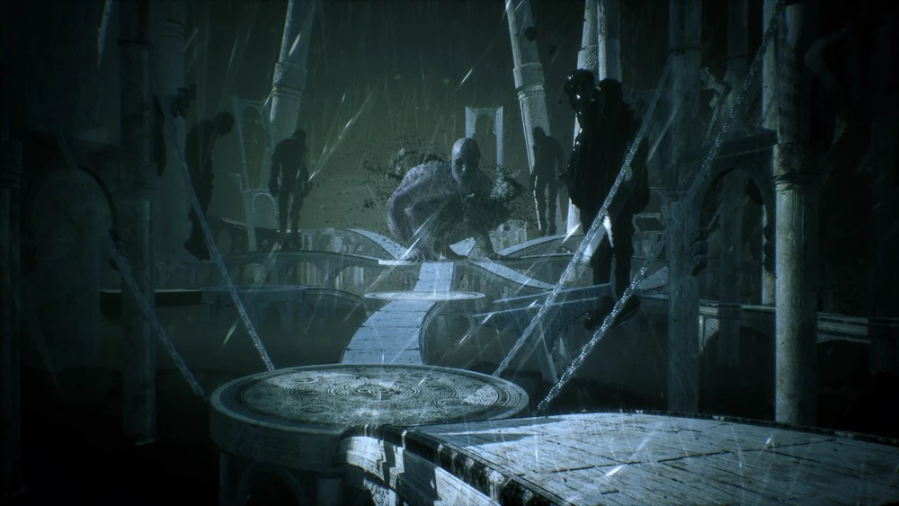
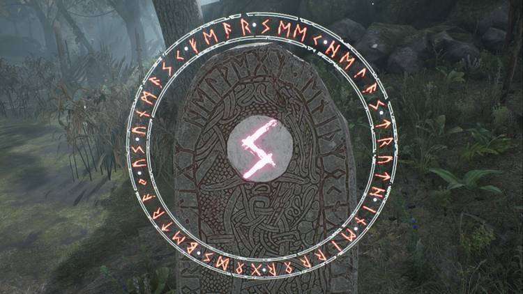

HellBlade: Senua's Sacrifice
Hellblade é uma aventura narrativa que acompanha a emocionante jornada de Senua, uma jovem guerreira celta em busca de seu amado falecido. O aspecto mais singular da história é a psicose de Senua, que a faz ouvir vozes e lutar constantemente contra a realidade. Dillion, o amado de Senua, foi sacrificado por vikings a Hela, a deusa nórdica da morte, e para libertá-lo, Senua precisa levar a cabeça de Dillion até Hela e negociar com ela.
O jogo é muito envolvente, combinando narrativa e quebra-cabeças, e proporciona ao jogador uma perspectiva única de uma mente atormentada por alucinações e vozes.
Inimigos e Quebra-Cabeças
Ao longo de sua jornada, Senua enfrenta diversos inimigos, incluindo vikings, monstros e criaturas mitológicas. Cada inimigo apresenta desafios únicos, exigindo que o jogador utilize habilidades de combate.

Embora o combate ocupe apenas uma pequena parte do jogo, ele pode ser imersivo e tenso, já que não há interface gráfica, forçando você a confiar em seus instintos. As vozes de Senua frequentemente a auxiliam, oferecendo conselhos rápidos, como gritar "Atrás de você!". Os inimigos são relativamente fáceis de derrotar em quase todos os níveis de dificuldade, e você raramente enfrenta mais de 2 ou 3 inimigos ao mesmo tempo. Para avançar na história, é necessário realizar a resolução de quebra-cabeças durante todo o jogo, onde envolve a busca por simbolos específicos e tambem a resolução de enigmas com ilusões.

Helheim
Helheim é retratado no jogo como uma montanha gigantesca, estendendo-se alto o suficiente para bloquear o sol. Toda a sua metade superior é coberta por uma grande estrutura de madeira que pende sobre a ponte que lhe dá acesso de um lado.
O portão de Helheim é a entrada que separa os vivos dos mortos, onde, para atravessá-lo, Senua deve derrotar os deuses Surtr e Valravn em seus respectivos domínios e obter suas marcas, que servem como chaves para o portão.
Por dentro, Helheim é um labirinto escuro de quartos e câmaras que abriga a grande fera Garm como seu guardião. No topo da montanha, Hela espera em seu santuário por Senua para desafiá-la pela alma de Dillion.

Senua chega na entrada para Helheim e encontra Hela, sendo ferida e tendo sua espada quebrada. Enquanto lamenta seu fracasso, Senua tem a visão de um homem, que ela percebe ser o espírito de Dillion. Ela caminha lentamente pela praia e chega a uma grande árvore, dentro da qual a espada Gramr está presa. Senua tenta puxar a espada, mas não consegue até que ela a forje novamente.

Provações de Odin
Senua precisar completar as provações de Odin nas quatro pedras rúnicas de metal brilhantes ao redor da árvore. Cada pedra inicia um desafio, sendo estes: - Desafio da Cegueira, - Desafio do Labirinto, - Desafio do Pântano, - Desafio da Torre.

Após arrancar Gramr da Árvore da Morte, Senua é transportada para o Mar dos Cadáveres. Ele é descrito como uma vasta extensão de água escura e sinistra, cercada por nevoeiro e coroada por um céu tempestuoso. É um lugar associado à morte, sofrimento e desespero. O Mar dos Cadáveres é um dos muitos cenários sombrios e perturbadores de Hellblade, que ajudam a criar uma atmosfera intensa e emocionante no jogo.
Santuário de Hela

O Santuário de Hela é o último local de Hellblade: Senua's Sacrifice antes do confronto final contra a deusa Hela. Para adentrar ao santuário, Senua enfrenta Garm, guardião de Helhein.
Sempre que Senua atravessa uma área que não é bem iluminada por luz natural ou tocha, o ambiente escurece e flashes distorcidos de vermelho começam a ficar mais intensos conforme Garm se aproxima dela. Se Senua permanecer no escuro por muito tempo, ela será morta. Garm é um dos desafios mais difíceis do jogo.

Santuário Interior de Hela
Senua alcança um portão que dá acesso ao interior do santuário de Hela. Ela abre o portão e caminha por um belo corredor extenso. Na metade desse corredor, Senua se depara com um espelho mágico, e um grande portal ao final do corredor. Ao se aproximar do espelho mágico, Senua vê outra versão de si mesma (representa as vozes usando sua forma corpórea), que tenta convencê-la a desistir e não seguir adiante. Mas ela já estava determinada e adentra o primeiro portal, fazendo com que essa outra versão se apague em cinzas.

Quando Senua chega à plataforma em que Hela está, a forma gigante de Hela encolhe para o tamanho humano normal como Senua, significando como os anos de abuso que ela sofreu nas mãos de seu pai não têm poder sobre ela. Hela então convoca uma quantidade infinita de nórdicos e observa enquanto eles eventualmente oprimem e derrubam Senua.
Hela se aproxima de Senua gravemente ferida, ajoelhando-se para tirar sua espada dela. Senua percebe que se sua condição não era uma escuridão real como seu pai disse, então Hela também não é real e, portanto, ela não pode salvar a alma de Dillion. Mas ela se apega desesperadamente à fantasia, oferecendo sua própria alma em troca de Dillion. Hela não responde e Senua simplesmente diz que ela deveria matá-la porque ela não tem mais nada. Hela obedece, atropelando Senua com sua própria arma. Quando Senua morre, Hela pega a cabeça de Dillion e caminha até a borda de seu Santuário. Ela o joga no abismo branco abaixo e, conforme a câmera volta, Senua toma o lugar de Hela. Com o estigma de sua condição não mais a impedindo, Senua se despede de Dillion e vai embora.
Pedras da sabedoria
As Pedras da Sabedoria são totens escondidos em Hellblade: Senua's Sacrifice. Eles contêm as memórias das histórias de Druth, contadas a Senua durante seu isolamento auto-imposto. Existem 44 Pedras da Sabedoria para encontrar no jogo e as Pedras da Sabedoria de cada área contam uma história diferente da lenda nórdica.
